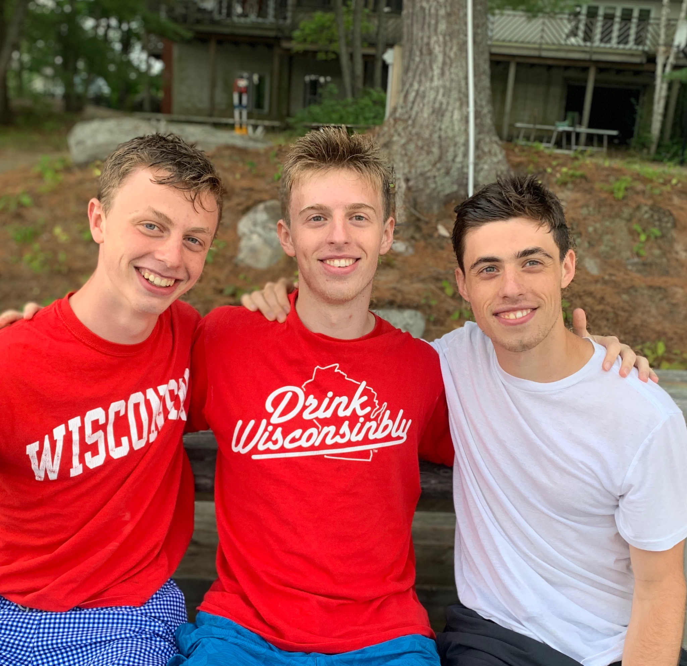

Computer Engineering Student
I attended high school at Charles E. Smith Jewish Day School in Rockville, Maryland. There I learned that I enjoy physics, math, and computer science, particularly hands-on experiments and projects. I was a 2017 National Merit Finalist, and decided to study engineering at University of Wisconsin-Madison.
I am currently a third-year student at the University of Wisconsin-Madison, pursuing a degree in Electrical and Computer Engineering. I decided to study computers because in todays world, it seems that these devices are all around us, integrated into most useful technologies. It drove me crazy to think that I am so dependant on computers, but was utterly ignorant about how they actually work! I wanted a behind-the-scenes look at the magic that makes our modern world run.
I have been fortunate to intern at several exciting, dynamic workplaces in the past two years. Blah Blah Blah.